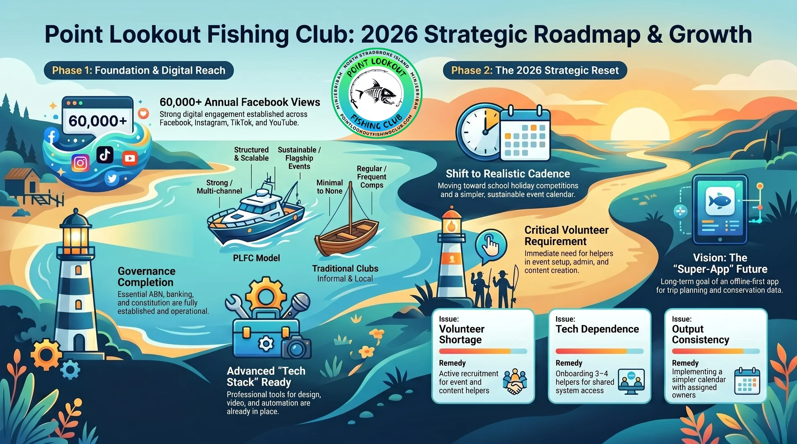

Public trust
Clear club story, events, conservation intent, meeting place, ABN and social links.
AGM reset
The roadmap view keeps the website connected to governance, grant readiness, participation data and the practical work of running the club.
Visual roadmap
This image is kept as source evidence. The website then converts it into clearer sections, public-facing calls to action and committee-ready next steps.

Build pillars
Clear club story, events, conservation intent, meeting place, ABN and social links.
Forms, member type routing, payments, communications, renewals and member pack delivery.
Agenda, minutes, action items, officer reports, calendar and responsibility tracking.
Evidence of reach, participation, volunteer effort, events, outcomes and future needs.
Next actions
Each step is small enough to explain, approve and improve without making the committee feel trapped by a giant tech project.